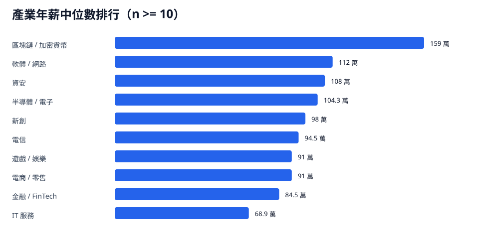

依產業分類比較月薪與年薪中位數。主要排名圖納入樣本數至少 10 筆的產業；小樣本分類保留在補充表。
分析見解
- 區塊鏈 / 加密貨幣以年薪中位數 159 萬排第一；高薪策略可鎖定高變現、高技術門檻的產品型產業。
- 軟體 / 網路有 107 筆、年薪中位數 112 萬；半導體 / 電子有 72 筆、年薪中位數 104.3 萬，兩者是工程職涯的主戰場。
- IT 服務有 131 筆但年薪中位數為 68.9 萬；若讀者以薪資成長為優先，轉向產品型軟體、資安或半導體職缺會拉高上限。

圖中只呈現樣本數至少 10 筆的產業；小樣本分類列在補充表。
主要產業樣本
| 產業 | 樣本數 | 資料可信度 | 月薪中位數 | 月薪 P25-P75 | 年薪中位數 | 年薪 P25-P75 |
|---|---|---|---|---|---|---|
| 區塊鏈 / 加密貨幣 | 10 | 可參考 | 12.2 | 10.5 - 15.4 | 159 | 127.5 - 186 |
| 軟體 / 網路 | 107 | 可參考 | 8.1 | 6.4 - 11.8 | 112 | 81.9 - 165.9 |
| 資安 | 35 | 可參考 | 7.8 | 7 - 9 | 108 | 89.3 - 126 |
| 半導體 / 電子 | 72 | 可參考 | 7 | 6 - 10 | 104.3 | 80 - 146.9 |
| 新創 | 23 | 可參考 | 7 | 5.8 - 9.5 | 98 | 74.5 - 133 |
| 電信 | 14 | 可參考 | 5.8 | 4.6 - 6.9 | 94.5 | 78.2 - 130.3 |
| 遊戲 / 娛樂 | 20 | 可參考 | 6 | 5.6 - 8.4 | 91 | 76.8 - 116.9 |
| 電商 / 零售 | 15 | 可參考 | 6.5 | 4.8 - 7.8 | 91 | 64.8 - 120 |
| 金融 / FinTech | 40 | 可參考 | 5.2 | 5 - 6.5 | 84.5 | 67.2 - 103 |
| IT 服務 | 131 | 可參考 | 5 | 4.2 - 6.1 | 68.9 | 54 - 87.3 |
小樣本補充
| 產業 | 樣本數 | 資料可信度 | 月薪中位數 | 月薪 P25-P75 | 年薪中位數 | 年薪 P25-P75 |
|---|---|---|---|---|---|---|
| 交通 / 物流平台 | 5 | 樣本偏少 | 12.5 | 7.5 - 13 | 150 | 97.5 - 156 |
| 外送 / 平台 | 2 | 樣本過少 | 11 | 8.5 - 13.5 | 150 | 117 - 183 |
| 政府 / 研究 | 5 | 樣本偏少 | 9.6 | 4.3 - 10 | 139.2 | 54 - 160 |
| 博弈 | 9 | 樣本偏少 | 8 | 6 - 8.5 | 120 | 72 - 135 |
| 媒體 / 出版 | 5 | 樣本偏少 | 8 | 7.4 - 8.2 | 98.9 | 96.2 - 104 |
| 製造 / 工業 | 8 | 樣本偏少 | 5.8 | 5.4 - 6 | 84.9 | 75.2 - 102 |
| 旅遊 | 4 | 樣本過少 | 6.2 | 5 - 8.8 | 79.3 | 68.8 - 117.4 |
| 教育科技 | 2 | 樣本過少 | 5.9 | 4.9 - 6.8 | 78.2 | 63.1 - 93.4 |
| 醫療 / 生技 | 7 | 樣本偏少 | 4 | 3.6 - 5.6 | 54 | 47.5 - 79.9 |